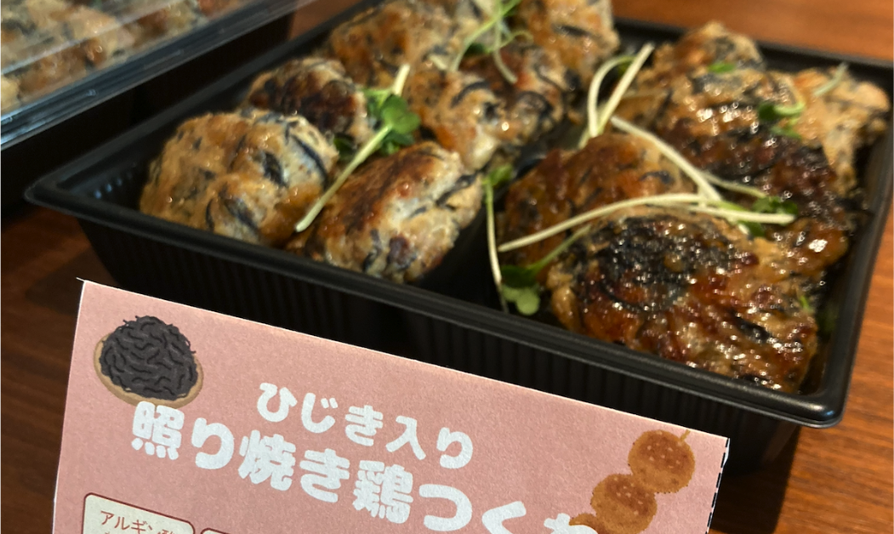

2025/08/22
【事業事例】東京科学大学イノベーションデザイン機構様へのケータリングメニュー監修
BitaPでは、健康の機能性の考慮だけでなく「食べる楽しさ」も大切にしています。今回のメニューは「夏バテした体をおなかからコスパよく元気に！」をコンセプトにセレクトいたしました。メニューは一口サイズのだし巻き玉子や鶏つくねといった、イベント来場者間で懇親をしながら食べやすいメニューでありながら、使用する食材について以下の点を工夫いたしました。
• 腸内環境の改善に重要な食物繊維の種類を増やす
• 水溶性・不溶性の両方の食物繊維を含める
• 栄養面や腸内環境との関わりをメニューポップで解説
食材の選定および商品紹介情報は弊社が収集・保有する「腸内細菌―栄養素―効果」の研究エビデンスデータに基づいて行いました。
【提供したメニュー】
• ひじき入り照り焼き鶏つくね
• 夏野菜たっぷりのラタトゥイユ
• プチプチとうもろこしの炊き込みおにぎり
• ふんわりだし巻き卵
また、同イベントにおいては、弊社代表取締役 千葉が登壇し、ケータリングメニュー監修プランに関するご紹介を行いました。実際のメニューは、東急池上線長原駅近くのAun Kitchen様にご協力いただき、参加者の皆様にご提供しました。
東京科学大学イノベーションデザイン機構様の発表記事はこちら：https://www.idp.ori.titech.ac.jp/event-news/7689/
Aun Kitchen様のホームページはこちら：https://aun-kitchen.com/
